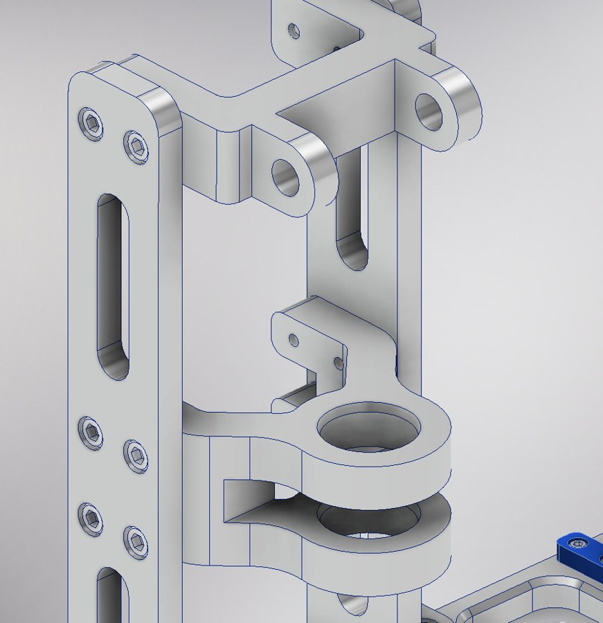

Caricamento del modello 3D…
Trascina la manopola arancione della leva · trascina altrove per ruotare la vista
Trascina la leva e guarda crescere la forza sul punzone.
Pagina di Sam Schillerwein
Tutto il meccanismo, in un colpo d'occhio.
Si illumina nell'animazione qui sopra.
Negli ultimi gradi la corsa del punzone è minima ma la forza diventa enorme: con 50 N sulla leva, a 2° si superano i 700 N. Spingi la leva fino in fondo e poi oltre il punto morto: il fermo la tiene chiusa da sola.
θ è l'angolo della manovella rispetto all'allineamento, φ quello della biella, L_A la leva e L₁ la manovella. All'inizio della pressatura (θ = 37,6°) la forza è circa 4 volte quella sulla leva, a fine corsa (θ = 2,51°) circa 51 volte. Con le aste allineate tenderebbe all'infinito.
Scorri di lato →
Il meccanismo costruito per l'Open Day.

Il modello di Sam è una pressa con leva, manovella e biella: abbassando la leva la manovella si avvicina all'allineamento e il punzone preme sul piattello, che è sostenuto da una molla. Una battuta meccanica ferma la leva vicino al punto morto.
Quando la forza sul punzone è più grande?
Open Day · Scuola d'arti e mestieri Bellinzona
← Tutti i meccanismi